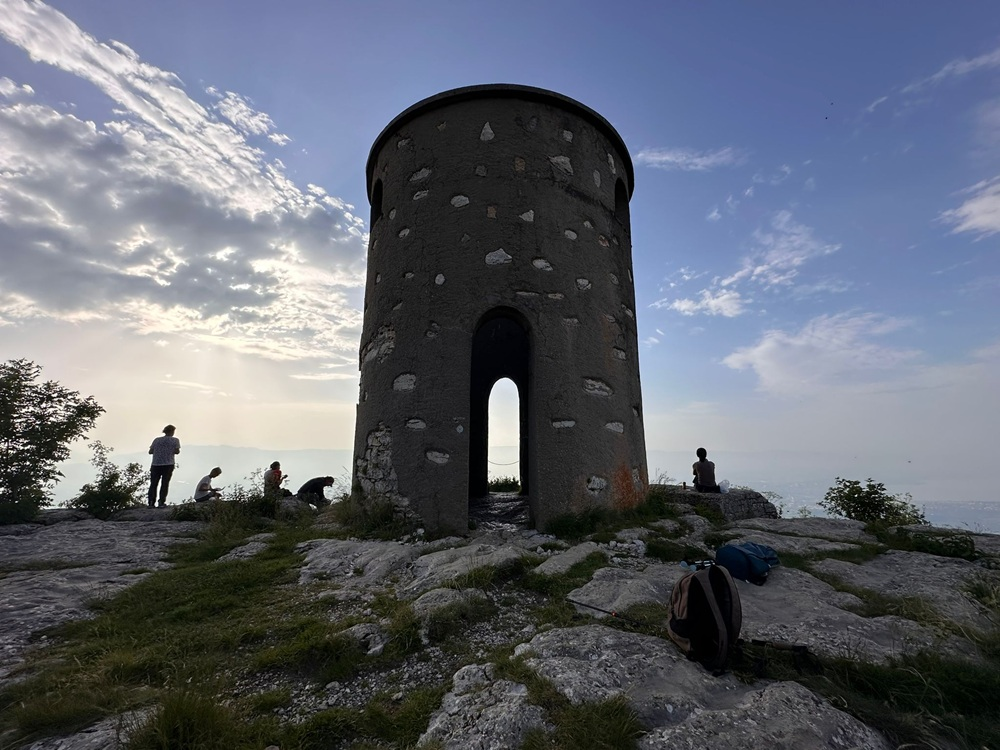

La Tour Bastian au Grand Piton est le point le plus haut au Salève (1379 m).
Nous montons par Vovray et les hauts de Beaumont au Grand Piton.
Retour par le chemin des Gardes et la Croisette, et descente par le chemin du Facteur.